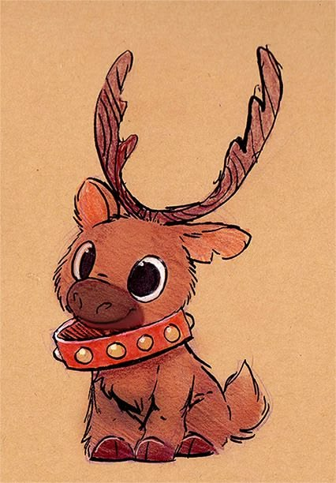
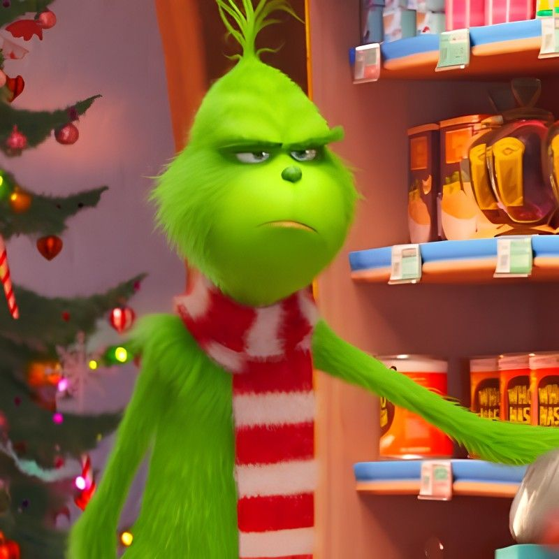
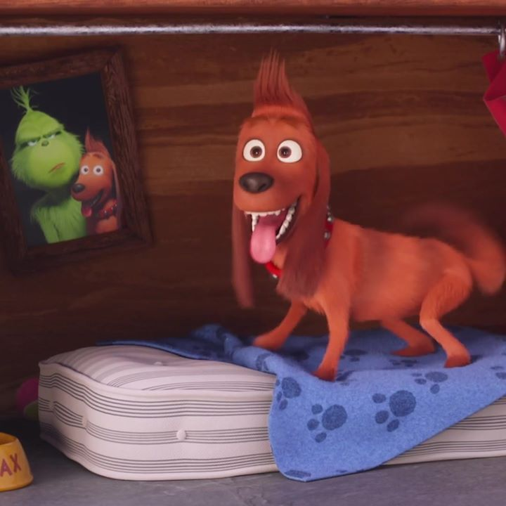
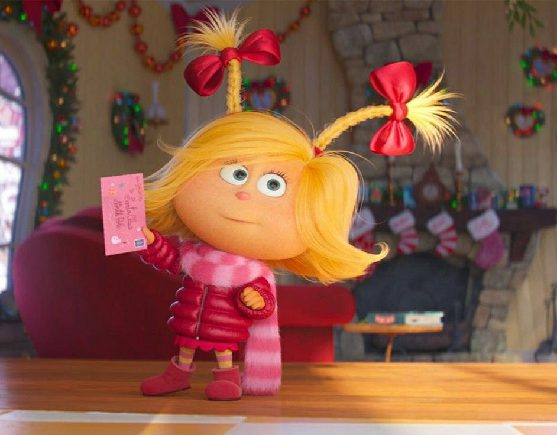

Papá Noel es uno de los personajes más conocidos de la Navidad. Es famoso por su traje rojo, su barba blanca y por repartir regalos a los niños.

Rodolfo es un reno muy especial porque tiene una nariz roja brillante. Ayuda a Papá Noel a guiar su trineo durante la noche de Navidad.

El Grinch es un personaje verde que al principio no soporta la Navidad. Vive alejado de los demás, pero poco a poco descubre el verdadero significado de esta celebración.

Max es el fiel perrito del Grinch. Siempre lo acompaña en sus aventuras y aunque su dueño sea un poco gruñón, Max es muy cariñoso y leal.

Cindy Lou es una niña amable y curiosa que cree en la bondad de las personas. Ella conoce al Grinch y quiere descubrir por qué no le gusta la Navidad.